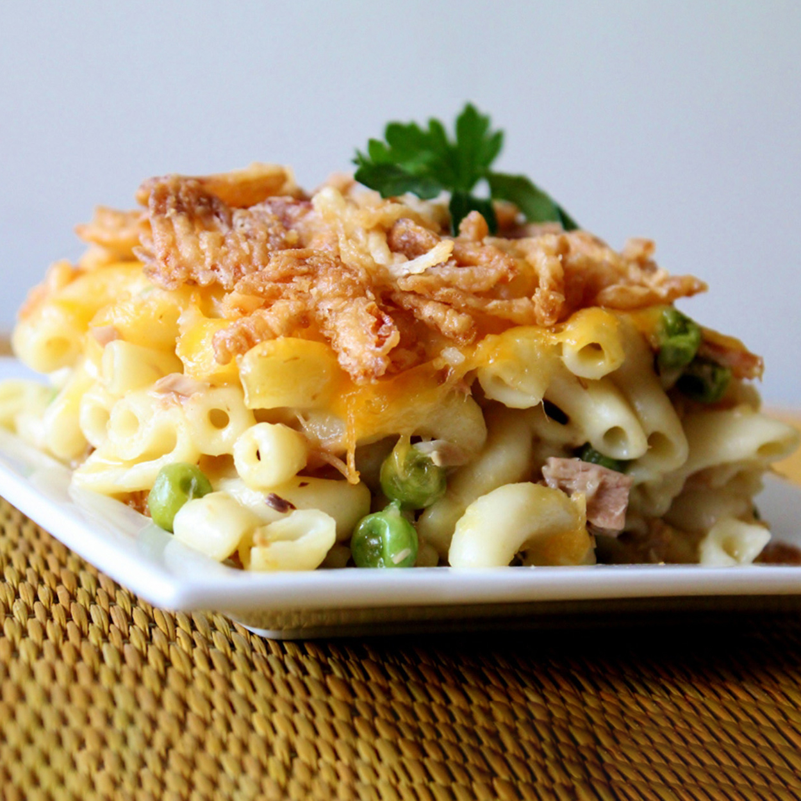

Tuna Casserole

Description
Tuna casserole is a casserole primarily made with pasta and canned tuna, with peas and corn sometimes added. The dish is often topped with potato chips, corn flakes, bread crumbs or canned fried onions.
Ingredients
- 3 cups cooked macaroni
- 1 (5 ounce) can tuna, drained
- 1 (10.5 ounce) can condensed cream of chicken soup
- ⅛ teaspoon ground black pepper
- 1 cup shredded Cheddar cheese
- 1 ½ cups French fried onions
Steps
- Preheat the oven to 350 degrees F (175 degrees C).
- Combine cooked macaroni, tuna, and condensed soup together in a 9x13-inch baking dish; sprinkle with cheese.
- Bake in the preheated oven until bubbly, about 25 minutes. Sprinkle with fried onions; bake 5 minutes more.